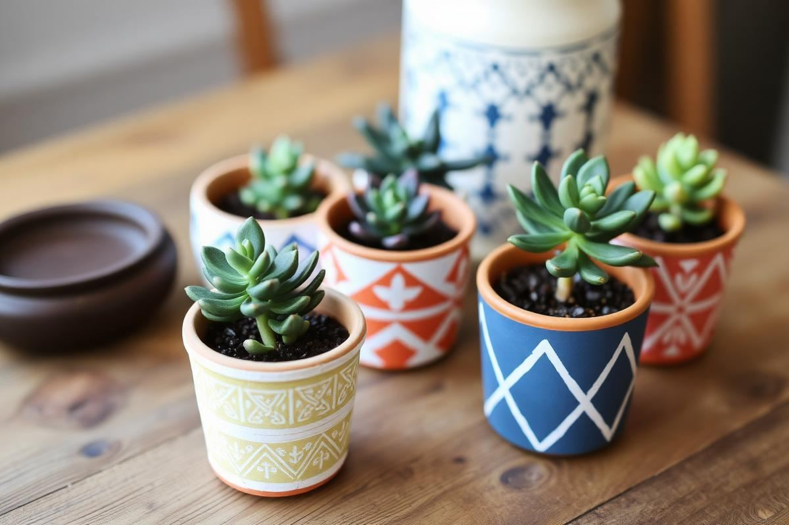
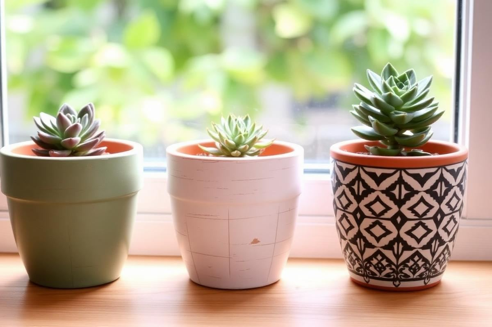
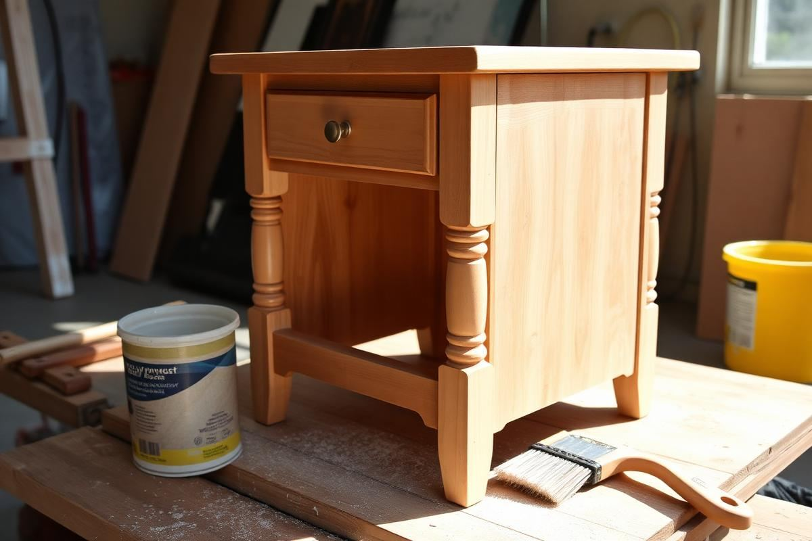

DIY Planter Ideas: Terracotta, Paint, and Patience

DIY Planter Ideas: Terracotta, Paint, and Patience is one of those topics where a little planning goes a long way. In this guide I walk through the process we use in real homes — not just what looks good in a photo, but what actually holds up over time.
Start here
Before you buy or move anything, measure the space and note how you actually use it. The best-looking room is one that matches how you live, so start with the routines: where you sit, where you drop keys, where the light falls in the afternoon.
The essentials
Focus on the pieces that do the most work. Get those right and the rest of the room comes together with much less effort. Aim for materials that patina rather than degrade, and colors you will still like in five years.
- Choose one clear focal point per room.
- Pick materials that improve with age.
- Layer textures instead of adding more colors.
- Leave visual breathing room — negative space is a design element.
Common mistakes
The mistakes we see most often are matching everything too tightly, over-scaling accessories, and skipping proper lighting. Fix those three and most rooms improve overnight.

Terracotta Transformation Techniques
Terracotta planters are a blank canvas, but achieving a professional finish without looking childish or overly rustic requires specific techniques. For a smooth, factory-esque matte finish, start with two coats of Zinsser Bulls Eye 1-2-3 Primer. This seals the porous surface, preventing your paint from soaking in unevenly and requiring excessive layers. Allow at least two hours drying time between primer coats. For a distressed, weathered look that mimics aged pottery, use a thin, watery wash of acrylic craft paint (e.g., FolkArt Acrylic, 2 oz for $1.99). Mix 1 part paint with 3 parts water. Apply with a natural bristle brush, then immediately wipe off excess with a damp cloth, allowing the terracotta’s natural color to peek through. Build up layers sparingly for control, rather than applying thick coats. This method works beautifully with muted greens, grays, and off-whites. For a speckled effect, load a stiff-bristled brush with slightly thinned paint, then flick the bristles towards the planter. Protect surrounding surfaces accordingly.
Glazing Alternatives for a High-End Look
For a sophisticated, glazed ceramic appearance without a kiln, clear sealers are your secret weapon. Rust-Oleum Painter's Touch 2X Ultra Cover Clear Gloss spray is excellent for a durable, high-shine finish. Apply 2-3 light coats, holding the can 10-12 inches away, allowing 15 minutes between coats. For a more subtle, satin sheen, choose a brush-on polyurethane like Minwax Polycrylic Protective Finish. This provides a water-resistant layer ideal for indoor planters. Apply with a good quality synthetic brush, ensuring even strokes to avoid brush marks. Allow 2-4 hours drying between coats, and lightly sand with 220-grit sandpaper if needed for an ultra-smooth finish before the final coat. The key to a non-tacky finish is thin, consistent layers and ample drying time.
Upcycling Unconventional Containers
Beyond traditional pots, unexpected items can be transformed into striking planters. Old tin cans, whether from coffee or vegetables, provide a rustic industrial charm. Start by thoroughly cleaning the can and removing labels. For drainage, use a metal drill bit (e.g., a 1/4-inch titanium-coated bit for $8) to create three to five holes in the bottom. A light tapping with a hammer and nail can help initiate the hole for the drill bit. Prime with a metal-specific primer (e.g., Rust-Oleum Clean Metal Primer for $5.99) to prevent rust. Then, paint with outdoor-suitable spray paint in matte black, brass, or a vibrant hue. Vintage glass bottles, particularly amber or cobalt, can become elegant propagation stations. Use a glass cutting tool (around $20) to carefully score and separate the bottom section, creating a small vase for cuttings. Smooth edges with sandpaper or a specialized diamond hand pad (around $15). Ensure the cut edge is not sharp.
Laundry Baskets, Crates, and More
For larger plants, woven laundry baskets or wooden crates offer unique textures. For a woven basket, line it with heavy-duty landscape fabric or a thick plastic planter liner—not just a plastic bag—to prevent soil leakage and contain moisture. Fold the liner over the edges for a clean look, or trim it flush. For wooden crates, ensure they are untreated or treated with plant-safe methods. If using old crates, inspect for splinters and sand them down (120-grit sandpaper first, then 220-grit for smoothness). Drill drainage holes, typically 1/2-inch to 1-inch diameter, every 6-8 inches along the bottom. Consider staining or painting the wood with outdoor-rated paints for longevity and aesthetic appeal. These larger containers are perfect for grouping multiple small plants or housing a single, larger specimen like a fiddle leaf fig or snake plant.
Drainage Solutions and Soil Prep
Adequate drainage is paramount for healthy plants, preventing root rot, the most common cause of plant demise in DIY planters. For pots without pre-drilled holes, a robust drill is necessary. For ceramic, a diamond-tipped tile drill bit is required (a 1/4-inch bit typically costs $10-15). Always use low speed and apply water as lubricant to prevent the ceramic from cracking due to heat. For plastic, wood, or metal, a standard drill bit (metal or wood specific) will suffice. Aim for at least one large (1/2-inch to 1-inch) central hole, or several smaller (1/4-inch to 1/2-inch) holes distributed across the bottom. A layer of horticultural charcoal (1 inch deep, $8 for 1 quart) at the bottom significantly improves drainage and helps absorb toxins, but is not a substitute for drainage holes. Avoid using rocks or pebbles at the bottom; this creates a 'perched water table' effect, making root rot more likely.
Optimizing Soil for DIY Planters
- **Standard Potting Mix:** For most houseplants, a high-quality all-purpose potting mix (e.g., FoxFarm Ocean Forest, $18 for 1.5 cu ft) is a good starting point. Avoid garden soil, which is too dense for pots.
- **Improved Drainage:** For succulents and cacti, amend standard potting mix with perlite or coarse sand (mix 2 parts potting mix to 1 part perlite/sand). Perlite (8 qt for $5) aerates the soil and prevents compaction.
- **Moisture Retention:** For moisture-loving plants (ferns, calatheas), add coco coir (10L brick for $10) to increase water retention. A ratio of 3 parts potting mix to 1 part coco coir is usually effective.
When initially potting, leave about 1-inch of space from the rim of the planter to the soil line. This accommodates watering without overflow and allows for future top-dressing.
Finishing Touches and Sealing
Once your paint job is complete and thoroughly dry (at least 24-48 hours), proper sealing is crucial for longevity, especially for outdoor planters or those in humid environments. For terracotta, spray sealers are generally easiest. Krylon Preserve It! Max Clear Coat offers UV protection and excellent weather resistance. Apply two to three thin, even coats, allowing 15-20 minutes drying time between coats. For a waterproof interior, crucial for terracotta to prevent moisture from leaching through and staining surfaces, use a rubberized sealant like Flex Seal Liquid. Apply two coats to the interior of the pot, ensuring full coverage, particularly around the drainage holes. Allow 24 hours drying time per coat. For wooden planters, an outdoor polyurethane or spar urethane (like Minwax Helmsman Spar Urethane, $15 for a quart) is ideal for weatherproofing. Brush on 2-3 coats, sanding lightly with 220-grit sandpaper between coats for maximum adhesion.
Decorative Accents and Plant Pairing
Beyond paint, consider natural accents: attach small pebbles or mosaic pieces with strong adhesive (E6000 Craft Adhesive, $5). For a rustic look, tightly wrap jute twine or sisal rope around the planter, securing with hot glue at the start and end. Match the planter's style to its occupant. A sleek, modern black pot is perfect for a structural snake plant or a minimalist ZZ plant. A distressed terracotta pot suits ferns or herbs. For an eclectic display, group pots of varying sizes and textures, unified by a consistent color palette or plant type. For instance, three terracotta pots — one painted sage green, one distressed white, and one natural — could house various succulents, creating a cohesive yet diverse visual interest.
Advanced Stenciling and Patterns
Moving beyond basic solid colors, stenciling and freehand patterns can elevate your planters. For crisp lines, invest in good quality reusable plastic stencils (e.g., a geometric pattern stencil set for $12). Secure the stencil tightly with painter's tape to prevent bleed. Use a stencil brush, applying paint in a dabbing motion rather than brushing, and use very little paint at a time to avoid seeping under the stencil. Acrylic craft paints work well here. For intricate patterns, a fine-tipped paint pen (oil-based Sharpie Paint Pens, $10 for a pack) offers precision. Practice on a spare piece of terracotta or cardboard first. Popular patterns include delicate floral motifs, bold stripes, or abstract geometric designs. For a two-tone effect without stencils, use painter's tape to create sharp divisions. Apply the first color, let it dry completely, tape off your design, then apply the second color.
Textural Elements and Raised Designs
To add tactile interest, consider using textured paint or applying raised designs. Textured spray paints, like Rust-Oleum Stone Spray Paint ($8.99), can mimic granite or stone. Apply in thin, even coats for best results. For raised patterns, a simple mixture of baking soda and acrylic paint can create a faux ceramic or plaster effect. Mix 1 tablespoon of baking soda into 2 tablespoons of acrylic paint until it forms a thick, spreadable paste. Apply this with a small palette knife or even a sturdy popsicle stick to create dots, lines, or abstract shapes. This mixture dries to a matte, slightly rough finish. For a more durable raised design, use a dimensional fabric paint (Puff Paint, $4) or a clear drying craft glue that can be painted over once dry. These techniques add significant character and a bespoke feel to even the simplest planter.
Key takeaways
- Match the room to how you actually live.
- Anchor with one main piece and clear lighting.
- Layer textures, not colors.
- Leave breathing room around every object.
Frequently asked questions
Where should I start?
Start with the largest piece and the light. Everything else — art, textiles, small objects — is easier to place once those two anchors are set.
What is a realistic budget?
Prioritize the pieces you touch every day. Spend more on those and less on decorative items, which are easy to swap over time.
How long should this last?
A well-chosen main piece should last 10–15 years. Refreshes come through textiles, art, and accessories, not full replacements.

Sophia Bennett is a certified interior stylist and the senior editor at Styleire. She has spent more than eight years helping homeowners and renters create warm, functional interiors, with hands-on experience across small city apartments and family homes. Her work has been informed by close collaboration with independent designers, craftspeople, and product testers.
View full profile →Related reading

DIY Wall Art Ideas That Don't Look DIY
You don't need to paint to make wall art. Some of the best DIY pieces are almost entirely assembly.

Upcycling Furniture Basics: A Beginner's First Project
Your first upcycle should be a small piece with good bones. Here is how to do it right the first time.

Garden Decor Ideas That Age Beautifully
Garden Decor Ideas That Age Beautifully — a clear, editor-tested guide covering the essentials without the filler.